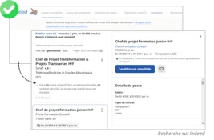

Parcours Optimisé
L'information est accessible rapidement, limitant le nombre de pages et de requêtes.
- ✓ 3 étapes
- ✓ 2 pages
- ✓ Résultat : 5 g CO2eq
Proposer des parcours optimisés pour réduire leur poids et leurs émissions de gaz à effet de serre, tout en garantissant une réponse rapide et pertinente aux besoins de l'utilisateur.
Dans le cadre d'un produit existant, analyser les parcours pour privilégier ceux les plus utilisés et les optimiser est un levier majeur. Le gain environnemental est réel, comme le montre cet exemple pour une recherche d'emploi.